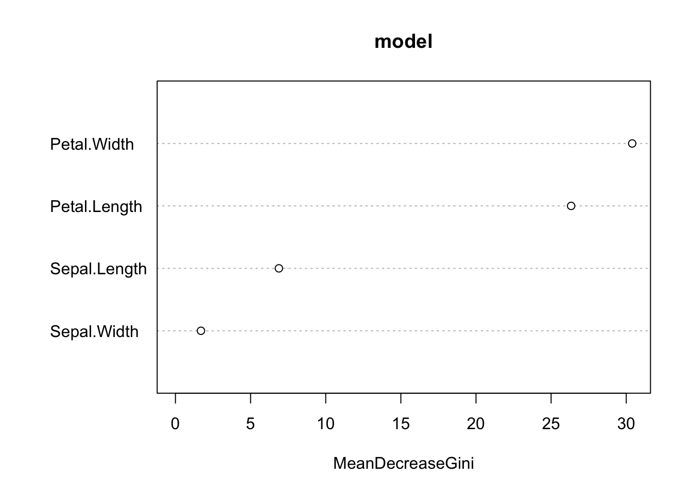

airquality = airquality[complete.cases(airquality),]
indices = sample.int(nrow(airquality), 50)
train = airquality[-indices,]
test = airquality[indices,]11 Machine Learning
The idea of machine learning is to maximize the predictive performance, which means to make predictions of y for new observations:
Let’s assume that part of the data is unknown (which will be our test data):
We first train a model on the train data and then use the model make predictions for new data (test data):
model = lm(Ozone~., data = train)
predictions = predict(model, newdata = test)
plot(predictions, test$Ozone, xlab = "Predicted Ozone", ylab = "Observed Ozone")We can calculate the predictive performance (or prediction) error, for example, by using the correlation factor:
cor(predictions, test$Ozone)
## [1] 0.7507237
#R^2:
cor(predictions, test$Ozone)**2
## [1] 0.5635861So the linear regression model is a great model for inferential statistics because it is interpretable (we exactly know how the variables are connected to the response). Many ML algorithms are not interpretable at all - they trade interpretability for predictive performance.
Random Forest is a famous algorithm which was first described by Leo Breiman, 2001. The idea of the random forest is to fit hundreds of ‘weak’ decision trees on bootstrap samples from the original data. Weak means that the decision trees are intentionally ‘constrained’ in their complexity (by random subsampling the set of features in each split):
library(randomForest)
## randomForest 4.7-1.1
## Type rfNews() to see new features/changes/bug fixes.
model = randomForest(Ozone~., data = train)
predictions = predict(model, newdata = test)
plot(predictions, test$Ozone, xlab = "Predicted Ozone", ylab = "Observed Ozone")cor(predictions, test$Ozone)
## [1] 0.8743062
#R^2:
cor(predictions, test$Ozone)**2
## [1] 0.7644113Our Random Forest achieved a higher predictive performance! BUT:
summary(model)
## Length Class Mode
## call 3 -none- call
## type 1 -none- character
## predicted 61 -none- numeric
## mse 500 -none- numeric
## rsq 500 -none- numeric
## oob.times 61 -none- numeric
## importance 5 -none- numeric
## importanceSD 0 -none- NULL
## localImportance 0 -none- NULL
## proximity 0 -none- NULL
## ntree 1 -none- numeric
## mtry 1 -none- numeric
## forest 11 -none- list
## coefs 0 -none- NULL
## y 61 -none- numeric
## test 0 -none- NULL
## inbag 0 -none- NULL
## terms 3 terms call…doesn’t tell us anything about effects or p-values. However, compared to other ML algorithms (e.g. artificial neural networks), at least the RF has a variable importance that reports which features were the most important features (similar to an ANOVA):
importance(model)
## IncNodePurity
## Solar.R 13699.618
## Wind 17359.697
## Temp 20800.423
## Month 7436.931
## Day 12076.380For the RF, the Temp was the most important feature, followed by Wind.
Tip
In ML a slightly different wording is used. Explanatory variables are called features. Datasets with responses with numerical values (e.g. Normal distribution or even Poisson distribution) are called regression tasks. Datasets with categorical responses (e.g. Binomial) are called classification tasks.
11.1 Regression
We call task with a numerical response variable a regression task:
indices = sample.int(nrow(airquality), 50)
train = airquality[-indices,]
test = airquality[indices,]
# 1. Fit model on train data:
model = randomForest(Ozone~., data = train)
# 2. Make Predictions
predictions = predict(model, newdata = test)
# 3. Compare predictions with observed values:
## the root mean squared error is commonly used as an error statistic:
sqrt(mean((predictions-test$Ozone)**2))
## [1] 20.41785
# Or use a correlationf actor
cor(predictions, test$Ozone)
## [1] 0.9017803
# Or Rsquared
cor(predictions, test$Ozone)**2
## [1] 0.813207711.2 Classification
We call a task with a categorical response variable a classification task (see also multi-class and multi-label classification):
indices = sample.int(nrow(iris), 50)
train = iris[-indices,]
test = iris[indices,]
# 1. Fit model on train data:
model = randomForest(Species~., data = train)
# 2. Make Predictions
predictions = predict(model, newdata = test)
# 3. Compare predictions with observed values:
mean(predictions == test$Species) # accuracy
## [1] 0.9496% accuracy, which means only 4% of the observations were wrongly classified by our random forest!
Variable importance:
varImpPlot(model)
Petal.Width and Petal.Length were the most important predictors!
11.3 Exercise
11.3.1 birdabundance dataset
library(EcoData)
library(randomForest)
set.seed(42)
indices = sample.int(nrow(birdabundance), 30)
train = birdabundance[-indices,]
test = birdabundance[indices,]
# ABUND is the response variableTask:
Fit random forest on train data
Predict for test data
Calculate R2
Do the same with a lm and compare the predictive performance of both models
11.3.2 titantic dataset
library(EcoData)
library(randomForest)
library(dplyr)
##
## Attaching package: 'dplyr'
## The following object is masked from 'package:randomForest':
##
## combine
## The following objects are masked from 'package:stats':
##
## filter, lag
## The following objects are masked from 'package:base':
##
## intersect, setdiff, setequal, union
set.seed(42)
titanic_sub = titanic %>% select(survived, age, pclass, sex, fare)
titanic_sub = titanic_sub[complete.cases(titanic_sub),]
indices = sample.int(nrow(titanic_sub), 200)
train = titanic_sub[-indices,]
test = titanic_sub[indices,]Task:
Fit random forest on train data
Predict for test data
Calculate Accuracy
Do the same with a glm (binomial) and compare the predictive performance of both models
What is the most important variable?
Solution
rf = randomForest(as.factor(survived)~., data = train)
m = glm(survived~., data = train, family = binomial)
pred1 = predict(rf, newdata = test)
pred2 = predict(m, newdata = test, type = "response")
# pred2 are probabilities, we have to change them to levels
pred2 = ifelse(pred2 < 0.5, 0, 1)
mean(pred1 == test$survived) # RF
## [1] 0.82
mean(pred2 == test$survived) # glm
## [1] 0.765RF is better than the glm!
varImpPlot(rf)
Sex is the most important variable!
11.3.3 Bias-variance tradeoff
An important concept of statistics and, in particular, ML is the concept of the bias-variance tradeoff - or in other words, finding the right complexity of the model. So how flexible should our model be so that it generalizes well to other/new observations. Many ML algorithms have complexity parameters (e.g. nodesize or mtry in RF) that control their complexity. Have a look at the following youtube video about the bias-variance tradeoff:
Let’s see how we can control the complexity in the Random Forest algorithm:
library(randomForest)
set.seed(123)
data = airquality[complete.cases(airquality),]
rf = randomForest(Ozone~., data = data)
pred = predict(rf, data)
importance(rf)
## IncNodePurity
## Solar.R 17969.59
## Wind 31978.36
## Temp 34176.71
## Month 10753.73
## Day 15436.47
#> IncNodePurity
#> Solar.R 17969.59
#> Wind 31978.36
#> Temp 34176.71
#> Month 10753.73
#> Day 15436.47
cat("RMSE: ", sqrt(mean((data$Ozone - pred)^2)), "\n")
## RMSE: 9.507848
#> RMSE: 9.507848
plot(data$Temp, data$Ozone)
lines(data$Temp[order(data$Temp)], pred[order(data$Temp)], col = "red")
Try different values for the nodesize and mtry and describe how the predictions depend on these parameters. (randomForest(…, nodesize = …, mtry = …) (the exercise was taken from the ML course book)
Solution
library(randomForest)
set.seed(123)
data = airquality[complete.cases(airquality),]
for(nodesize in c(1, 5, 15, 50, 100)){
for(mtry in c(1, 3, 5)){
rf = randomForest(Ozone~., data = data, mtry = mtry, nodesize = nodesize)
pred = predict(rf, data)
plot(data$Temp, data$Ozone, main = paste0(
"mtry: ", mtry, " nodesize: ", nodesize,
"\nRMSE: ", round(sqrt(mean((data$Ozone - pred)^2)), 2)
)
)
lines(data$Temp[order(data$Temp)], pred[order(data$Temp)], col = "red")
}
}


11.3.4 ML pipeline
If you want to know more about a typical ML pipeline/workflow, read this chapter from the ML course!